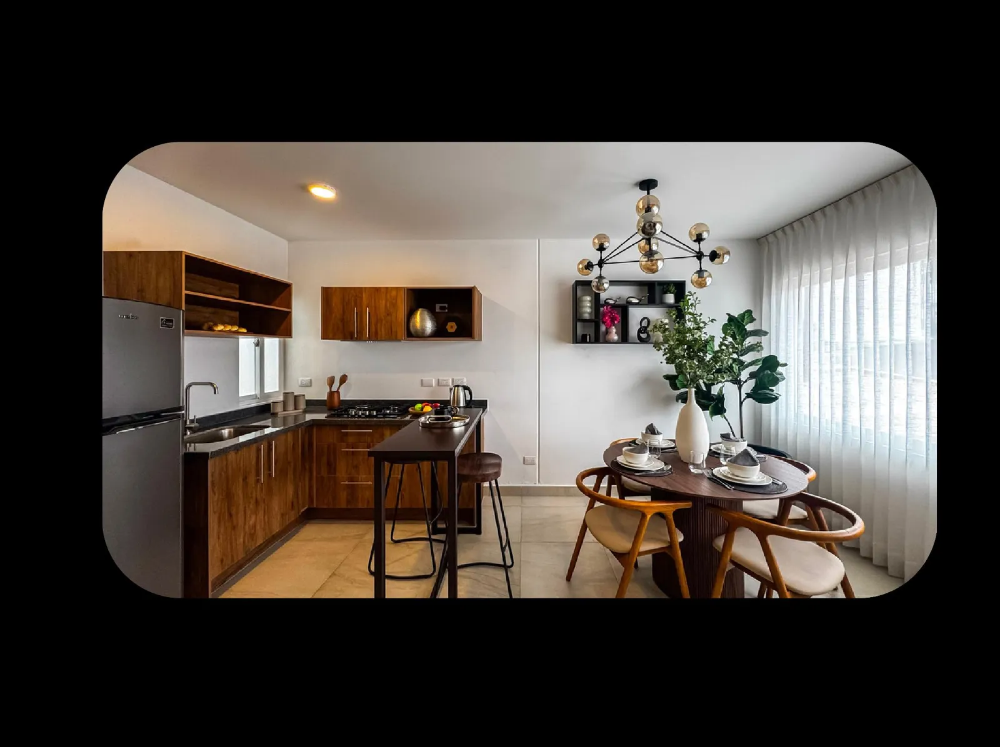
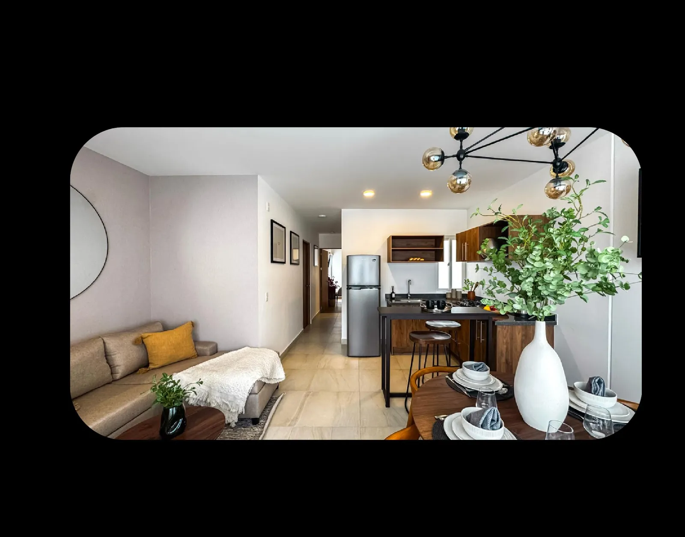
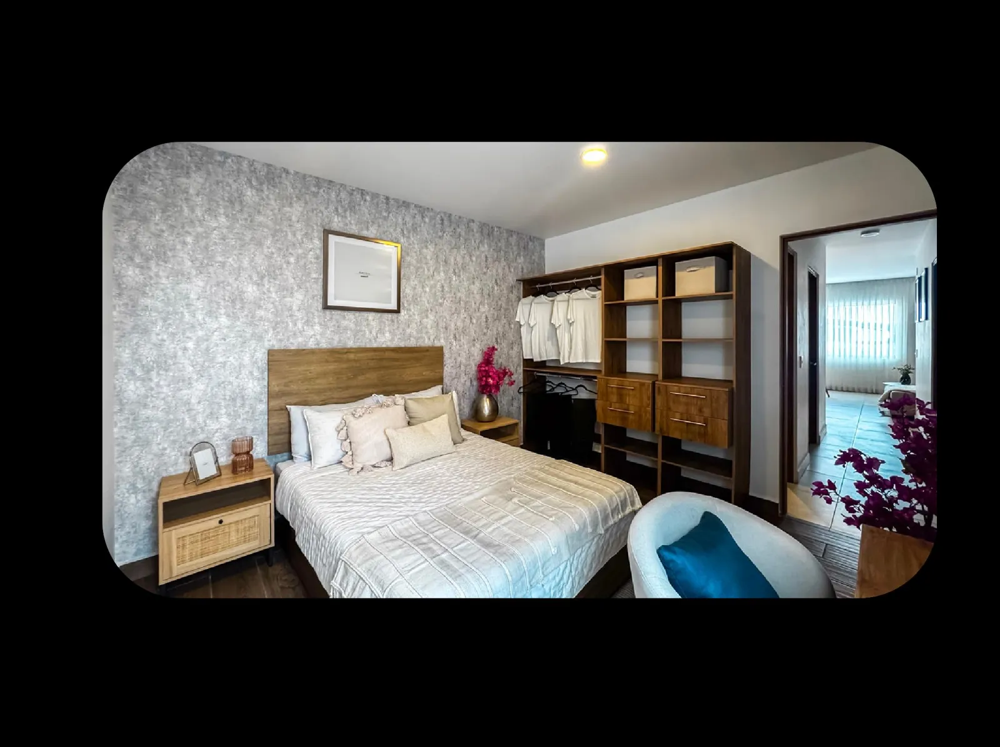
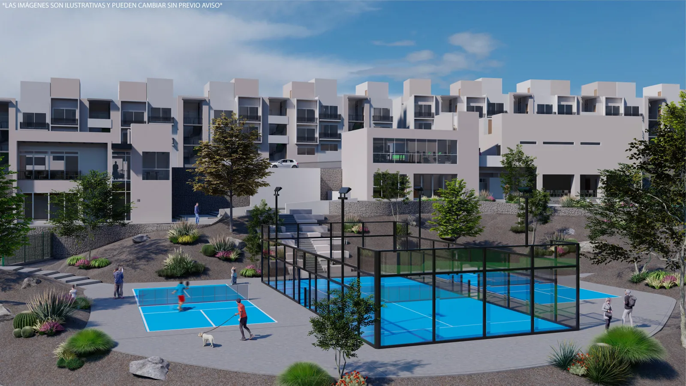

Zibatá en tu vida diaria
Puede tener sentido si buscas concentrar tus actividades en esta zona. Compara recorridos, servicios y accesos desde Vita Sophia II, no sólo desde la entrada de Zibatá.
Departamento · Zibatá
$2,850,000 a $3,435,000 MXN
Precio actualizado · sujeto a disponibilidad y condiciones de la unidad.




Desliza para explorar las imágenes → · Imágenes ilustrativas del proyecto.
MÁS ALLÁ DE LOS METROS CUADRADOS
Puede encajar contigo si… Quieres explorar vivienda en Zibatá con dos recámaras y amenidades que realmente usarías.
Puede tener sentido si buscas concentrar tus actividades en esta zona. Compara recorridos, servicios y accesos desde Vita Sophia II, no sólo desde la entrada de Zibatá.
Las dos recámaras y los 2.5 baños son el punto de partida. Las variantes de distribución, estacionamiento y patio según unidad permiten buscar la combinación que mejor te funcione.
La propuesta del proyecto incluye espacios deportivos y de convivencia. Su valor para ti depende de que los uses; revisemos cuáles corresponden a la etapa que comprarías.
Para inversión, revisemos renta comparable, cuota condominal, entrega y competencia del proyecto. La demanda de la zona por sí sola no demuestra rentabilidad.
UBICACIÓN Y ENTORNO
Búsqueda por nombre del desarrollo; confirma el acceso conmigo antes de tu visita.
Departamentos en Zibatá. Consulta tipologías, superficies, estacionamiento y amenidades aplicables a cada unidad.